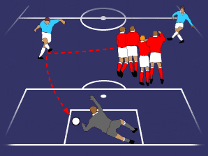

Indirect Proofs

- Direct Proofs
- A proof in the logic being used
- Indirect Proofs
- Problem is translated to another logic
- Proof found in the other logic
- Proof is translated to original logic, if possible
- At least assured of existence of proof in original logic
- Translation to FOL
- Problems translated to FOL
- Solved with FOL automated reasoning tools
- Two translation approaches
- Translational approach
- Truth evaluation approach
- No translation of proofs/models